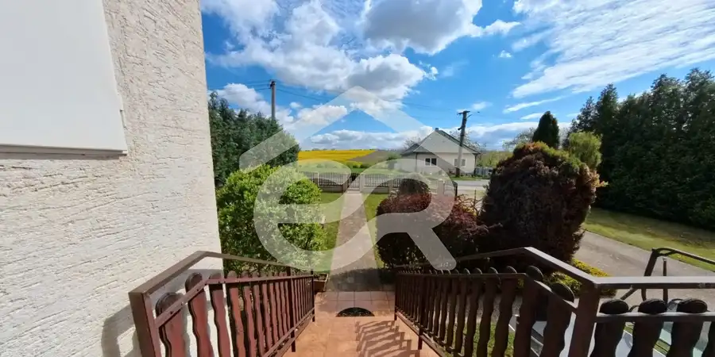
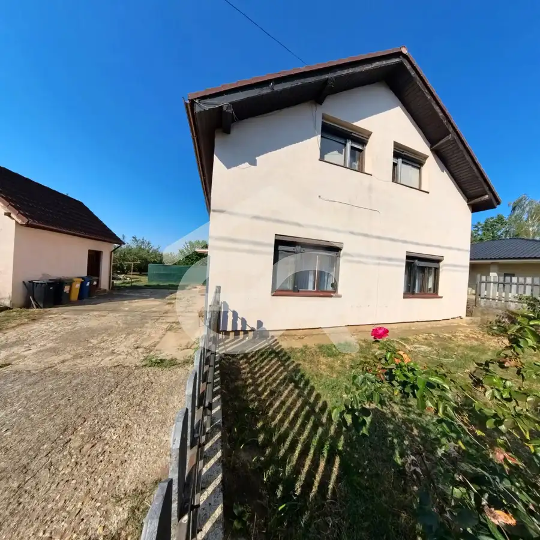
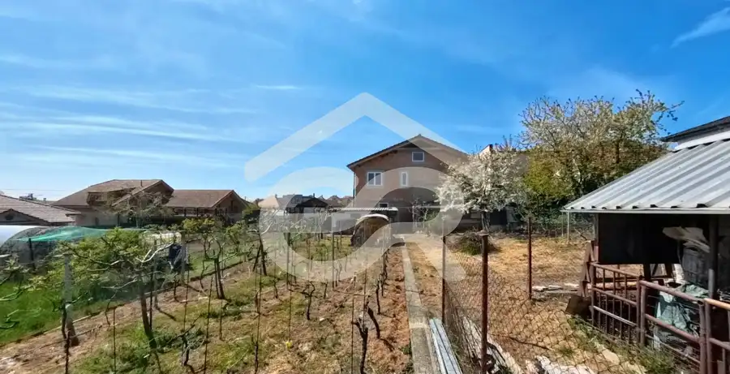

Ponúkame bezbariérové priestory na 1.PP v MediaHaus 325m2
Nitra
- Plocha325 m²
- Poschodie0. z 1
- Stavčiastočne prerobený
O nehnuteľnosti
Jedná sa o bezbariérové priestory na 1.PP, kde sa momentálne nachádza internetový obchod so skladom. Priestory ponúkame do prenájmu najskôr od 1.10.2026
Priestory majú univerzálne využitie:
- z dvora dva vstupy, bočné dvere a garážové dvere, je možné však v prípade záujmu otvoriť ďalšie dvere a sprístupniť aj z druhej strany budovy, napríklad ak by niekto mal záujem priestor využiť na nejaký šport, tancovanie a toho času kancelária by sa mohla využiť ako prezliekareň, šatňu.
1/ 260m2 vrátane kuchynského kútu, menšieho skladu za kuchynským kútom a kúpeľne s toaletou
2/ 31,80 m2 príručná kancelária s výstupom na terasu
3/ 33,75m2 skladový priestor, vysoká brána zvlášť budova výška 4 metre
Parkovisko vo dvore, nevyhradené parkovanie podľa dohody.
Cena za m² sa odvíja od typu služby a konkrétnej prevádzky, ktorá si bude priestory prenajímať.
Pre viac informácií ma kontaktujte :
t.číslo:
e-mail:
Parametre
| Zastavaná plocha | 325 m² |
|---|---|
| Úžitková plocha | 325 m² |
| Poschodie | prízemie |
| Počet poschodí | 1 |
| Stav | čiastočne prerobený |
| Voda | verejný vodovod |
| El. napätie | nie |
| Plyn | nie |
| Kanalizácia | áno |
| Postavené z | panel |
| Energetický certifikát | nie |
| Dátum zverejnenia | 17. 8. 2026 |
Kde to je
Mohlo by Vás zaujímať

Rodinné domy10 234 999 €Na PREDAJ rodinný dom s pozemkom 3401 m2 v Ripňanoch !! Malé Ripňany 4-izbový266 m² Ponúkam na predaj poschodový, celopodpivničený rodinný dom v obci Malé Ripňany, skolaudovaný v roku 1998. Nehnuteľnosť je ideálnou voľbou pre tých,…
Rodinné domy8 230 000 €Poschodový rodinný dom v Mojmírovciach! Mojmírovce 6-izbový124 m² Ponúkam na predaj priestranný 6‑izbový rodinný dom nachádzajúci sa v obci Mojmírovce, len 14 km od Nitry a 22 km od Šale. Nehnuteľnosť je situovaná v…
Rodinné domy9 220 000 €Predaj rodinného domu v Nitrianskych Hrnčiarovciach !! Nitrianske Hrnčiarovce 4-izbový150 m² Holodom vo vyhľadávanej lokalite pod Zoborom – komfort, priestor a kvalitné materiály. Hľadáte domov v tichej, prestížnej lokalite len na skok od…